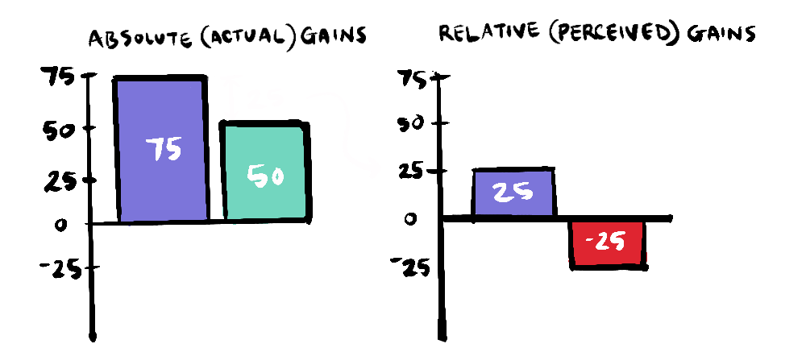

~ how not to measure success ~
In Jean Jacques Diderot's Regrets on Parting with My Old Dressing Gown he describes the opulent furnishings that now adorn of his once familiar home.
The straw chair was relegated to the antechamber by a leather chair... This corner asked for a writing desk, which it obtained.
Diderot found himself in a trap when he inherited some money and began buying new furniture and accoutrements, beginning with a scarlet dressing gown, only to discover that their presence made his other belongings appear outdated and drab by comparison. He laments that he could have maintained a modest and coherent home...
...if the imperious scarlet hadn’t set everything to march in unison with it.
As the (potentially apocryphal) story goes, this need to have everything "march in unison" led to Diderot's replacement of nearly everything in his house, alienating him from his own home and exhausting his funds.
All that remains of my original mediocrity is a rug of selvage. I can feel that this pitiful rug doesn’t go well with my newfound luxury.
Diderot's compulsion to compare old with new, betrays an overemphasis on relative value over absolute value.
Relative value is essentially about comparison, as opposed to absolute value which is measured independently from zero. So, Diderot's wealth, if measured absolutely was tremendous, but because he was only capable of seeing the objects in his life in relation to other objects, each positive addition created the impression of a lack somewhere else - a zero-sum payoff, leaving him miserable.

This experience is echoed in wider society with the phenomenon of keeping up with the Joneses and is often critiqued with the aphorism...
Like Diderot, society at large can find itself victim to a preoccupation with the unwinnable game of relative gains, especially when media exposes us to people who have more or appear to be happier.

Mark Manson tells the story of Dave Mustaine, an early member of Metallica who was kicked out before they went on to sell 180 million albums.
"... in a rare intimate interview in 2003, a tearful Mustaine admitted that he couldn’t help but still consider himself a failure at times."
Mustaine said this despite the fact that, at this stage, he had gone on to form his own band Megadeath which had itself sold 25 million albums!
... But it wasn't Metallica.
The distinction between these two types of gain is directly related to zero-sum (relative) and non-zero-sum (absolute) games
- Absolute perspective: 25m + 180m = 205m albums sold (non-zero-sum outcome)
- Relative perspective: (25m - 180m perceived lack) + (180m - 25m perceived gain) = 0 total perceived benefit (zero-sum outcome)

It's interesting to note that, relative gains not only diminishes the perceived benefit of the "loser" but also diminishes the perceived benefit of the "winner", because it only accounts for the gain minus the gain of others who might be nipping at their heels.
In Game Theory absolute vs relative gains are explored in experiments using The Ultimatum Game which involves giving one of two players some money which they can only claim by negotiating a share with the other player.
You can imagine if the game involved only worthless counters, then player two would not accept any offer that wasn't at least 50/50, because the game only involves gains relative to the opponent.

However, when money is involved, the absolute value of the money affects the outcome. In literally thousands of experiments, researchers found that the minimum acceptable offer for most participants was as low 30%. The fact that offers below this amount were usually rejected suggests that humans have an innate sense of relative value (fairness) which they will defend at some absolute cost to themselves.

But while we have a natural sense of fairness, looking at our lives solely in relative terms can lead to a narrowing of our moral perspective. Our parochial trials and tribulations can blind us to people who are not just relatively worse off but are in absolute need, lacking basic necessities. As discussed in Diminishing Returns on Happiness, if we are in fact comfortable, and can ignore our more trivial ups and downs, we have the opportunity to provide asymmetric benefits for those in dire need at comparatively little cost to us.
As discussed in Evil Globalisation and how it is eliminating poverty, humanity has made progress against the important metric of global inequality and with it, extreme poverty. But it is possible to look at our collective progress in the same way as our tragic friend Diderot, only ever recognising the problems that lay on the horizon, never acknowledging the progress made so far, something Steven Pinker refers to as "Progressophobia". On the other hand, if we only focus on the absolute gains, and don't see the possibility for a better future we may not make the necessary changes.
Another problem with solely focusing on absolute gains could be that they are used to justify mutually beneficial but highly unequal solutions.
It's complicated. While relative gains can be a measure of fairness, it is beneficial to focus on whether those relative gains are really material. If we are talking about a level of inequality that leaves people socially immobile, lacking in basic needs or worse, then those gains are, on an absolute scale, real and we should do all we can to address them. But for those of us who are comfortable, people who are perhaps the recipients of a grand inheritance like Diderot or have sold 25 million albums like Dave Mustaine, we can gain a lot of perspective by considering absolute gains.